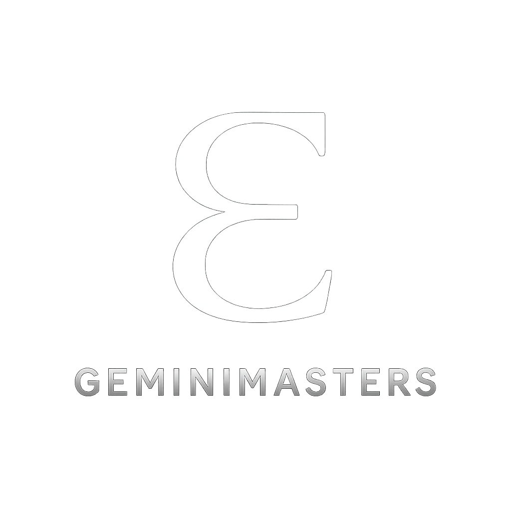

A unified reading in The Master's Voice – Western Astrology, Human Design, Vedic Astrology, BaZi, and Numerology aligned into one, coherent and personalised map. Not a forecast. A rediscovery of the cosmic design that has always been yours.
Western astrology describes your lived personality and life themes — how your psyche expresses itself through archetype, relationship, and choice.
You are here to embody steadfastness that nurtures growth — a guardian of values and traditions that also holds space for evolution within community. The Taurus Sun and 11th-house emphasis point to a purpose rooted in creating lasting, tangible contributions that benefit groups or social movements. Your Capricorn Moon reinforces this with a call to leadership through example and responsibility. Ultimately, your path is about balancing personal security with collective engagement, becoming a bridge between inner emotional wisdom and outer practical achievement. You radiate a quiet authority that reassures others and invites them to build alongside you.
You face tension between your need for emotional security, shaped by your Cancer Ascendant, and the demand for practical achievement indicated by your Capricorn Moon. This friction can manifest as hesitation or self-doubt when stepping into leadership roles or pursuing long-term goals. The heavy fixed energy solidifies your resistance to change, making adaptation feel like a slow grind rather than an effortless shift. In relationships and social circles, the 11th-house emphasis pushes you toward greater involvement with groups or causes, but your cautious inner nature may hold you back from fully engaging. You might struggle to balance your personal boundaries with the pressure to be reliable and consistent for others, often feeling stretched between your own needs and external expectations.
Your growth lies in embracing flexibility within your fixed structure. The north node’s direction invites you to move beyond rigid control and cultivate emotional openness, especially in how you relate to others within communities. Saturn’s influence in Capricorn asks you to confront your fears of vulnerability and failure, urging you to build resilience not by holding tight, but by learning when to release. This soul is being called to integrate the nurturing instinct of Cancer with Capricorn’s ambition without losing the grounded Taurean patience. Growth happens when you allow yourself to trust the process of change, even if it feels uncomfortable or uncertain at first.
Your strongest gifts lie in your reliability, patience, and capacity to cultivate stability under pressure. Others experience you as a calm presence who grounds ideas into reality with care and persistence. Your blend of Taurus and Capricorn energies supports practical problem-solving and thoughtful planning, making you a natural architect of long-term success. With Cancer rising, you also bring an intuitive sensitivity that helps you read the emotional currents around you, allowing you to respond with empathy and discretion. When aligned, these qualities create a steady source of support that others trust deeply.
Recurring themes of responsibility, self-discipline, and emotional containment thread through your life. The Capricorn Moon and its conjunctions suggest a lineage of emotional restraint and inherited expectations to uphold family or social status. You may find yourself repeatedly in roles where you sacrifice personal desires for duty or reputation. The nodal axis suggests a karmic cycle between security in familiar structures and the challenge of stepping into new social roles. There can be a pattern of internalizing pressures rather than vocalizing needs, which echoes in both personal relationships and professional environments. This inward holding can create emotional bottlenecks that demand conscious release.
You are not meant to rush change or force breakthroughs. Your steady, deliberate pace is your strength, but it requires patience with yourself when transformation feels slow or incomplete. Recognizing that emotional vulnerability is not weakness but a form of courage can ease the tension between your protective Cancer Ascendant and your reserved Capricorn Moon. Your natural caution is a gift that protects you from impulsivity. When you soften your grip on control, you open space for authentic connections and new possibilities without losing your sense of stability. Challenges are initiations inviting you to embody trust in both yourself and the unfolding of life.
Human Design maps your energetic mechanics — how your system is built to make decisions, use energy, and move through life with less resistance.
You are here to embody openness and adaptability, teaching through your presence how to navigate uncertainty without losing integrity. Your contribution is to model fluidity in identity and decision-making, showing that clarity does not always come from within but often emerges through engagement with the outside world. Your path invites others to release rigid control and trust the unfolding process of life. By being a receptive conduit, you help dissolve barriers between fixed ways of being, encouraging flexibility and understanding in relationships and communities. Your life demonstrates that strength can arise from vulnerability and that spaciousness in your energy allows growth and connection in unexpected ways.
The main tension you face is the absence of a clear internal guidance system, which can lead to uncertainty and difficulty trusting your choices. Without a defined Authority, decisions often feel like a guessing game or a response to pressure from outside influences. This uncertainty can create a persistent inner conflict about whether you are acting authentically or simply reacting to the energies around you. Open centers make you vulnerable to conditioning, especially in areas where others project their certainty or emotional intensity. This can cause confusion, emotional overwhelm, or a sense of losing yourself in relationships or environments. You may find yourself repeatedly trying to anchor your identity or direction through external validation, only to feel more scattered and unsure. Recognizing when you are absorbing others’ energies is a daily challenge.
Growth comes from learning to embrace your openness as a strength rather than a weakness. Because you do not have a fixed strategy or authority, your evolution depends on cultivating awareness of external signals and developing patience to allow clarity to emerge organically. Your edge lies in resisting the urge to make immediate decisions or force outcomes and instead practicing discernment through observation and reflection. By honoring your need to move slowly and gather information from your environment, you will find moments of genuine insight that guide you forward. Learning to distinguish your own impulses from the energies you absorb opens the door to a more grounded sense of self. This process stretches you beyond the comfort of certainty into a space of fluidity and trust in timing, which is your next level of growth.
Your greatest gift is your openness, which allows you to experience and reflect a vast range of energies without being confined by them. This makes you an exceptional observer and a sensitive companion in any environment. Others may feel seen simply because you absorb and mirror their true states, providing subtle feedback that can reveal hidden truths or unspoken feelings. Your undefined centers free you from fixed energetic patterns, offering a fresh perspective that is not bound by habitual responses. This flexibility creates a dynamic aura that invites fluid exchange and transformation. When you are aligned, you create space for others to explore their own openness and find freedom from conditioning.
Repeatedly, you encounter patterns of confusion and identity diffusion, especially in relationships where defined centers in others exert strong influence. These patterns often manifest as feeling overly responsible for others’ emotions or losing track of your own needs. You might find yourself in cycles of trying to please or adapt, only to rebound with exhaustion or inner conflict. Work too may reflect this dynamic, where you take on tasks or roles that do not align with your true nature because external expectations feel overwhelming. Your karmic lesson involves learning to say no and establishing boundaries despite the absence of a clear internal authority telling you what is right. Internally, there can be a constant dialogue questioning who you really are, fueled by the openness that amplifies external voices.
You are designed to be an open mirror, reflecting and amplifying energies around you rather than carrying fixed inner forces. Accepting this can reduce the pressure to “figure it all out” from within and instead lean into the practice of observation. Trust builds not from a single inner voice but from the clarity gained after sitting with experiences, watching how they settle or shift over time. Your sensitivity is a gift that, when respected, offers deep empathy and insight into others’ states. This requires you to develop practices that protect your energetic boundaries so you can engage without becoming overwhelmed. Real power lies in your ability to remain fluid, adapting to change without losing your core presence. You have the unique capacity to hold space for complexity and multiple perspectives, which is rare and valuable. You are not meant to follow a fixed path but to create your own rhythm, one that honors the ebb and flow of your interactions with the world.
Vedic astrology reveals your karmic blueprint and life timing — showing what ripens beneath the Western chart through dharma, karma, and dasha cycles.
Your dharma is to integrate emotional wisdom with tangible service, using your natural empathy to lead and support communities or networks. The Cancer Ascendant’s nurturing impulse combined with the Taurus Sun’s grounding power enables you to build lasting foundations for others. Your role is to transform relational and social challenges into opportunities for collective growth, wielding influence with care rather than control. Right use of power means honoring the delicate balance between ambition and heart, between what you build and whom you serve.
You are currently moving through Rahu Mahadasha, a period marked by intense karmic lessons around illusion, ambition, and the urge to break free from old patterns. Rahu’s placement with the Moon in the 6th house fuels psychological tension and health-related challenges that demand attention. This dasha activates your need to master daily routines and overcome internal fears or subconscious blocks. The cluster of the Sun, Mercury, and Venus in the 11th house highlights the challenge of managing social expectations and ambitions without losing your inner truth. You may feel pulled between the desire for recognition and the need to stay authentic, facing tests around authority and friendships that reveal hidden motives or imbalances.
Your growth requires embracing discipline where it feels most uncomfortable: the service-oriented 6th house and the career-driven 10th house. You are asked to mature beyond reactive emotional patterns, especially those tied to protection and withdrawal. This soul must learn to wield ambition with integrity, balancing Rahu’s restless hunger with the steady strength of Taurus Sun’s patience. Struggles around anxiety or overwork are signposts guiding you toward healthier boundaries and clearer priorities. You are being stretched to refine your leadership not through force but through consistency and emotional intelligence, transforming challenges into mastery of self and circumstance.
You carry the gift of emotional resilience anchored by practical steadiness. Venus-ruled Purva Ashadha in the Moon’s position blesses you with charm, creativity, and an ability to inspire through beauty and truth. The cluster in the 11th house enhances your capacity to connect, communicate, and manifest aspirations within communities. Rahu’s energy, while challenging, sharpens your intuition and strategic thinking when you learn to channel it consciously. Your innate sensitivity to others’ needs combined with intellectual clarity makes you a natural problem-solver and bridge-builder.
BaZi reveals your elemental constitution and life cycles — showing how resources, pressure, and timing interact so you can work with the seasons of your fate.
You are called to lead with warmth and courage while embodying clarity and emotional intelligence. This means showing up as someone who can ignite enthusiasm and inspire others, but also someone who listens deeply and adjusts with wisdom. Your role is to bridge the gap between action and reflection, encouraging growth in yourself and those around you. The Monkey year and Shen branches grant you agility and a sharp mind, suited to navigating complexity and thinking creatively. Your contribution is to transform challenges into opportunities by blending initiative with insight. You are not simply a forceful presence; you are a strategist who knows when to push forward and when to draw back to gather strength.
You are navigating a push-pull between your strong Fire ambition and the controlling presence of Metal and the challenging flow of Water. The Seven Killings (Ren stems in year and hour) bring pressure to assert yourself and overcome obstacles, yet the Direct Resource (Yi in month) calls for support, learning, and patience. This tension can create stress when you feel torn between aggressive action and the need to pause and replenish. Your Fire, which thrives on expansion and warmth, can be challenged or "cut" by Metal’s sharpness, while Water’s strength can either fuel your fire or dampen it, depending on how you manage these energies. This setup often leads to internal conflict about timing decisions or trusting your intuition. The Yang Fire in the day pillar suggests you may feel exposed or vulnerable when your fiery self is questioned by external forces or your own doubts. The imbalance caused by weaker Earth and Wood means you might struggle to find lasting stability or consistent self-care habits, which magnifies the tension between your drive and your resources.
Your growth lies in cultivating the quieter Earth and Wood energies that support your bright Fire. Earth will help you build boundaries and resilience, giving your flame a solid base rather than letting it burn out too quickly. Wood, although the least present, is the natural producer of Fire—it represents growth, vision, and renewal. Seek ways to nurture your creative roots and establish routines that feed your body and mind steadily. At the same time, refine how you engage with Metal and Water forces. Learn to temper Metal’s sharp critiques to serve clarity without harshness, and embrace Water’s emotional depth without letting it extinguish your drive. Practicing patience and discernment in decision-making will ease the friction between your Seven Killings’ urge to act and the Direct Resource’s call to learn. Balance movement with rest, and ambition with humility.
Your Yang Fire grants natural charisma, resilience, and the ability to motivate others. The strong presence of Metal sharpens your intellect and sense of justice, helping you cut through confusion and find effective solutions. Water’s influence deepens your emotional awareness and adaptability, allowing you to navigate changing circumstances with grace. The combination of Seven Killings and Direct Resource in your chart gives you the gift of courage under pressure and the capacity to learn from experience. You can face challenges head-on and absorb lessons that refine your approach. The Monkey’s cleverness supports quick thinking and resourcefulness, making you well-equipped to handle complex situations.
You have a pattern of recurring tension between asserting authority and seeking support. The presence of Seven Killings twice intensifies challenges related to control, competition, and managing external pressures. This can manifest as a cycle of pushing hard to prove yourself, only to meet resistance or burnout. Relationships may reflect this, with themes of dominance and submission, or moments where you feel misunderstood despite your efforts. The Direct Resource in the month pillar suggests a karmic invitation to receive help and cultivate trust in others, though this may feel at odds with your independent, fiery nature. At times, you might undervalue your own needs or overextend, caught in a loop of proving worth through action rather than presence. Health rhythms may echo these cycles, warning you to pay attention to how stress impacts your vitality.
The imbalance in this chart is not a flaw but a training ground for mastering the interplay of force and flow. Your Yang Fire’s brightness requires constant dialogue with Metal’s clarity and Water’s depth. When you resist these influences, you exhaust yourself or create unnecessary conflicts. Instead, embrace them as necessary contrasts that sharpen your purpose and keep your energy from running wild. Recognize that your less emphasized Earth and Wood are not weaknesses but hidden reserves. They offer you the capacity to ground your passion and grow steadily over time. This pattern teaches that true power comes not from constant burning but from cycling between expansion and consolidation. You are learning how to be both a vibrant light and a steady hearth.
Numerology translates your soul’s frequency into a life path — clarifying your core drives, lessons, and the kind of impact you’re here to mature into.
Your path centers on pioneering new directions with a foundation of care. You are meant to lead by example, showing that strength and service coexist. This means creating space for innovation while holding responsibility for the people and values that matter most. Your adventurous Expression 5 supports a purpose of breaking through old boundaries and inspiring others to embrace change. At the same time, your Life Path 1 positions you as a trailblazer who initiates transformation. The Soul Urge 6 grounds this mission with a heart-centered focus, reminding you that your leadership is ultimately about nurturing community and connection. In living this purpose, you embody what it means to be a leader who cares deeply, not just for success or status, but for the lasting well-being of yourself and those around you.
Your main challenge lies in balancing the urge to lead and be independent with your deep need to care and nurture. The pull between your Life Path 1 and Soul Urge 6 can create inner conflict: you want to break new ground, yet you may feel obligated to prioritize others’ needs or maintain stability. This tension can slow you down or create frustration if you don’t consciously manage it. The restless energy of your Expression 5 may push you toward constant change, which can unsettle your relationships and commitments. You might struggle with feeling torn between personal freedom and the responsibilities you hold. Recognizing when to assert yourself and when to yield will be crucial in navigating this challenge.
You are invited to grow by integrating your leadership with compassionate service. This means learning to lead not just with confidence and drive, but with understanding and patience toward those you care for. Expressing your adventurous spirit while honoring your commitments requires a maturity that blends freedom with responsibility. Your growth will come from embracing flexibility without losing your direction. You can develop a stronger sense of timing—knowing when to push forward and when to pause and support others. This balance will unlock a higher expression of your numbers, where leadership serves connection rather than separates from it.
You naturally bring courage and innovation to your daily life, feeling energized when you take the lead on new projects or ideas. Your capacity to adapt makes you comfortable with change, and you often see opportunities others miss. This gift of flexibility helps you move swiftly when circumstances demand it. At the same time, you have a genuine warmth and sense of responsibility that makes others feel supported and understood. Your ability to balance power with kindness means people trust you to handle difficult situations with both strength and care. Your diplomatic Birthday 2 adds finesse to your interactions, allowing you to navigate conflict and maintain harmony even when stakes are high. These combined gifts make you effective at building bridges and inspiring others to follow your vision.
Recurring themes likely involve struggles with control and the push-pull between independence and obligation. You may find yourself repeatedly tested on your ability to balance personal ambition against the needs of family or community. Patterns might emerge where you sacrifice too much for others or, conversely, isolate yourself in pursuit of your goals. The tension between the powerful Personality 8 and the gentle Birthday 2 suggests karmic lessons around wielding authority with diplomacy. Learning to navigate power without dominance or withdrawal will be part of your ongoing work.
Understanding that your drive to lead and explore is not at odds with your desire to care for others can reduce self-judgment. You are not too ambitious or too sensitive; you are a complex blend that requires flexibility. Your heart and will are both essential parts of who you are, not competing forces. Recognize that your restlessness is a call for growth, not a flaw. It pushes you to expand your comfort zone, but it also needs grounding in meaningful relationships. Your ability to balance these elements is a sign of inner strength, not weakness. The power you project through your Personality 8 can be a tool for protection and influence, but it works best when softened by the empathy and tact your other numbers bring. You are more capable than you often give yourself credit for.